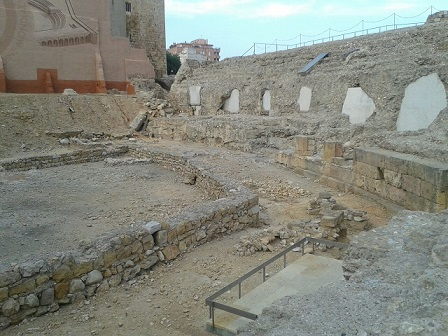
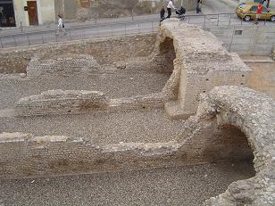
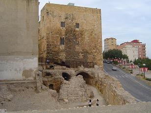
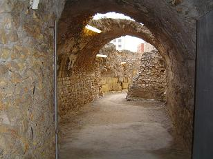
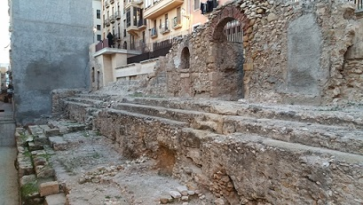
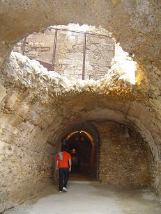
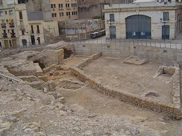
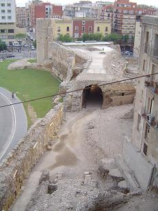
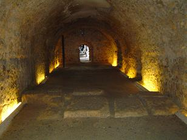
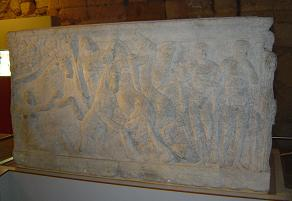

|
Fue construido a finales del siglo I, en tiempos del emperador
Domiciano, 81-96, complementando el programa de ordenación urbana del sector
oficial de representación provincial de la ciudad.
Tenía una forma alargada con unos 325 metros de largo y hasta 115
de ancho, y se calcula que tenía una capacidad para unos 30.000 espectadores.
De sus elementos estructurales se han conservado buena parte de
las arcadas que sostenían las gradas, restos de la fachada exterior y del podio,
así como algunas de las monumentales puertas de acceso al edificio.
|
 |
 |
El circo se cimentó sobre una serie de potentes bóvedas que
cumplían una doble función: por un lado, eran la cimentación sobre la que se
asentaban las gradas, las escaleras y la plataforma superior, y, por otro,
sirvieron de corredores internos que posibilitaban la distribución de los
espectadores por todo el edificio.
|

 |
Se han conservado tres arcos de medio punto de la fachada
perteneciente a la zona de la cabecera, el primero de los cuales da acceso a una
bóveda de circulación interna del circo y se conserva íntegramente en su forma
original. El arco central conducía a una escalera que permitía acceder a la
parte superior del circo y, desde allí, a los asientos de la grada. Se conservan
los tres primeros peldaños originales. En los extremos del segundo escalón se
pueden observar unas perforaciones para encajar posiblemente los bornes de una
reja o puerta para poder cerrar el edificio cuando no había espectáculo. |
La grada estaba dividida en dos sectores (maenianae) separados
por un pasillo (praecintio). Es posible que en el lado largo, que corresponde a
la actual plaza de la Font, pudiera haber existido una tercera maeniana. En
general de la grada se conserva la base, construida en opus caementicium y
estaría completamente revestida con sillares.
De la grada se ha conservado el núcleo de cemento sobre el que se
sentaba el público, que originalmente estaba revestido de piedra. La grada
conservada en este sector corresponde aproximadamente a la mitad de la curva.




La bóveda de San Hermenegildo sostiene la plataforma superior del
circo en la zona de la curva. Por una lado, limita con la muralla del paseo de
San Antonio, por el otro pueden verse una serie de bóvedas inclinadas que
servían para sostener la grada.
|
La bóveda larga de cañón tiene una longitud de 93 metros y servía
para sostener parte de la superficie superior del circo en uno de sus lados
longitudinales. A su derecha la bóveda limita con la plaza de representación del
foro provincial y, por el otro lado, con las bóvedas de las gradas del circo. Al
final de la bóveda larga existe en la actualidad un acceso a una sala cubierta
con bóveda que guarda en su interior una escalera central con unos corredores
laterales a ambos lados. La escalera daba acceso a la grada y por los corredores
se podía llegar a la arena del circo. Se trataba de un acceso entre la grada y
la pista.
Desde la sala de exposiciones Tarraco, puede observarse un
fragmento de grada de la que se conserva el soporte de cemento en forma
escalonada, sobre el que estaban colocados los asientos para el público. Ésta es
rectilínea ya que nos hallamos en uno de los lados longitudinales del edificio.
|
 |
En el vestíbulo de la sala del sarcófago se exponen fragmentos de
una gran columna de mármol de Carrara que formaba parte del gran templo de culto
imperial situado detrás de la actual Catedral.
|
 |
La sala expone el sarcófago de Hipólito que data de inicios
del siglo III y se recuperó del mar. Sus relieves reproducen el mito de un héroe
clásico: Hipólito. La mitología nos narra que su madrastra, Fedra, se enamoró
de él y viéndose rechazada por Hipólito planeó matarlo con la complicidad del
dios del mar. Poseidón envió un monstruo marino que espantó los caballos del
carro del héroe e Hipólito murió aplastado bajo las ruedas de su propio carro.
Gracias a sus inscripciones funerarias, conocemos a dos de los
aurigas que participaron en las carreras de Tarraco: Eutyches y Fuscus.
A partir del siglo V las estructuras arquitectónicas del edificio
son ocupadas paulatinamente por viviendas particulares. En la Edad Media la
población se establece en la Parte Alta. En el siglo XII el circo era el suburbio y
en el siglo XIV se amplia la muralla medieval y se integra el circo en la
ciudad. La nueva muralla del siglo XIV, “La Murallita” se construyó aprovechando
la fachada del circo.
|
En
febrero de 2019, descubren la primera fila de las gradas del circo en un solar
del carrer dels Ferrers nº 23. El inicio de la inma cavea.
Ver
Circos Romanos |